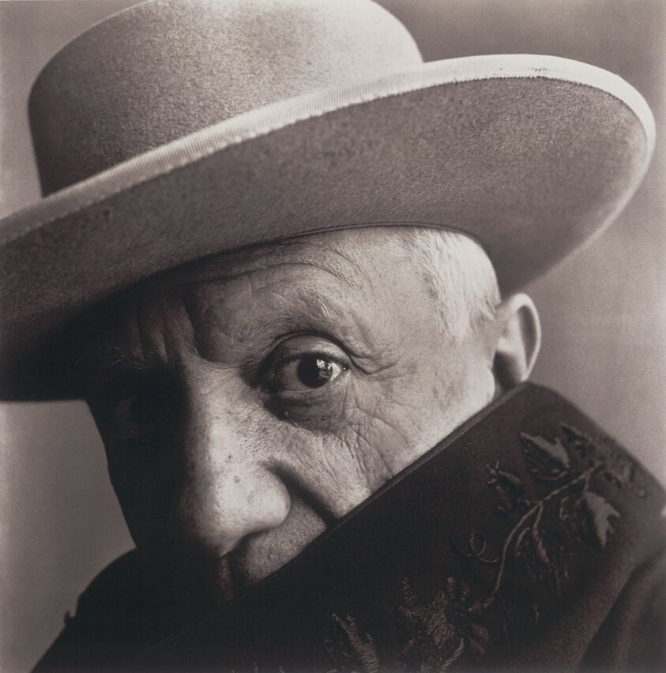

Picasso at La Californie, Cannes, France
Irving Penn · 1957, printed 1973 · Platinum-palladium print · 49.6 × 49.6 cm (image) · Art Institute of Chicago
In copyright. Look and learn: shown for study, not for download.
Irving Penn took the portrait in 1957 and made this print sixteen years later, in 1973, by a method he had worked out himself. He coated the paper by hand, mounted it on a sheet of aluminium so that it would register, and exposed it more than once: the back is marked platinum for the first coating and platinum-palladium for the second. It is number 32 of 45. The Art Institute of Chicago bought it in 1977 from the Marlborough Gallery, then Penn's representative.